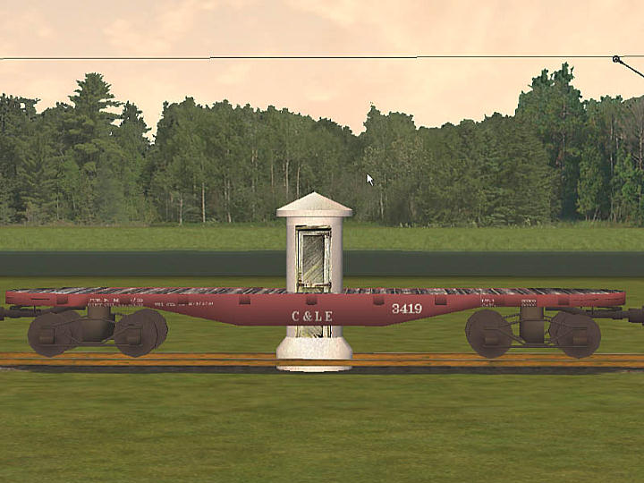
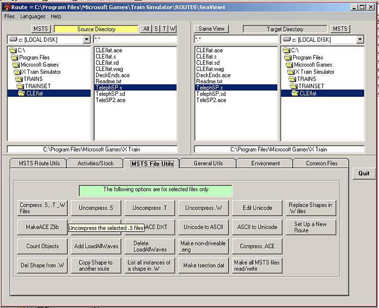
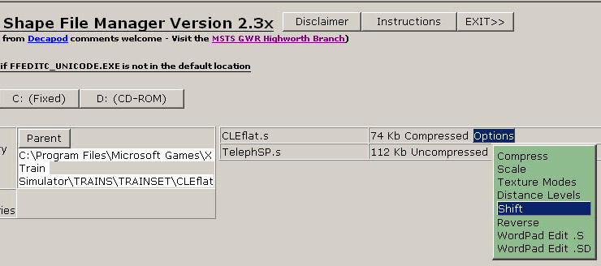
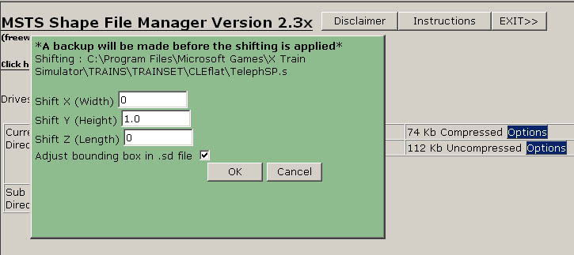
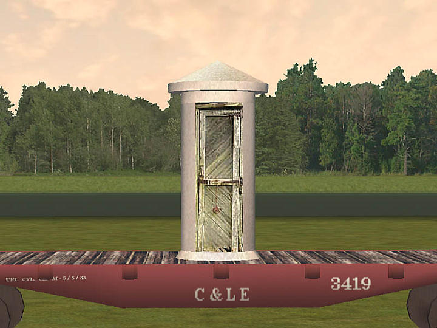
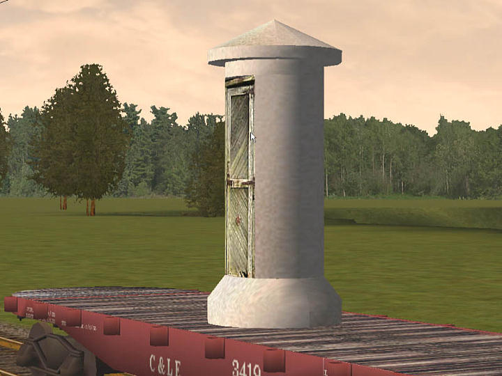
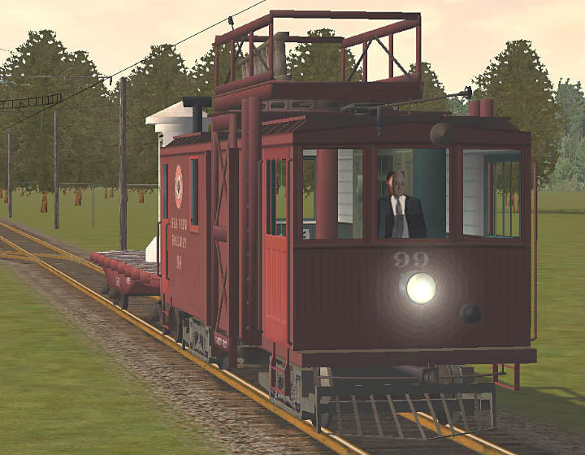

Adding Freight Loads To Gondolas And Flat Wagons (using Freight Animation)
by Tim Muir & Chuck Zeiler
You will need one additional tool to use the FreightAnim line to add a load to a freight car (or to add a person to a passenger car): Shape File Manager (SFM) is required to adjust the load upward, and possibly in other directions, depending on where you want the load to appear in the car (wagon). You can get SFM here.
Add the xxx.s, xxx.sd, and xxx.ace files to the wagon’s folder. In this case, I will add Paul DeVerter's SP phone booth to a CLE flat car.
The line to add the phone booth to the flat car looks like this:
Wagon ( CLEflat Type ( Freight ) WagonShape ( CLEflat.s ) FreightAnim ( TelephSP.s 1 1 ) <------ goes here Size ( 2.9635m 1.26332m 12.649200m ) Mass ( "27.396t" ) WheelRadius ( 33in/2 ) InertiaTensor ( Box (2.9635m 1.26332m 11.984183m) )
The 1 1 adjusts the load during operation: the original design was to make the coal load get smaller (move down) in a steam locomotive tender while the train used it up. For our purposes, the load stays put, so use 1 1 (see notes below for more information on this).
When it first appears in the sim, the load will be on the ground, in the center of the wagon, just the way it was designed to appear in MSTS.

You will need to raise it up to the deck of the flat car. Launch SFM, and locate the TelephSP.s file. I’ve not had any luck uncompressing an .s file in SFM, so I use Route Riter (available here) to uncompress the file. The file has to be uncompressed to manipulate it with SFM.
To uncompress the .s file in Route Riter, make certain that the file appears selected in both the left and right panes, and select MSTS File Utils tab, and click on the Uncompress .s button.

Once the file is uncompressed, select its Options in SFM, and click on Shift.

This will bring up a window, allowing you to shift the object in any (or all) of three planes.
The X axis shifts the object left for negative values and right for positive values.
The Y axis shifts the object down for negative values and up for positive values.
The Z axis shifts the object backwards for negative values and forwards for positive values.
For instance, a –1.0 on the X axis would place the phone booth on the left side of the freight car one meter from the centre point, looking at it from behind the flat car. A 1.0 would move it to the right of centre.
Right now, we are interested in raising the phone booth, I guessed about a meter, so I entered 1.0 into the Y axis, leaving the others at zero.


This did not quite do the trick, so I went back to SFM, and moved the Y axis a little more, 0.3, and it’s pretty close. You get the idea. You can tweak the numbers until you are satisfied.

As another example, here I’ve placed a motorman in the cab of the line car, by shifting both the Y axis and the Z axis, until he was where I wanted him. If the controls were on the right side of the car, instead of the middle, I would also have adjusted the X axis, probably 1.0.

Other points:
- The object does not add any mass or weight to the wagon, so you would need to adjust the weight, and possibly the friction, to simulate the load;
- The added load is unique to the wagon to which it is added. You could, however, copy the three files for the load to the depressed center flat car, then using SFM, adjust the Y axis with negative numbers, lowering it onto the deck;
- I place the FreightAnim line near the top of the xxx.wag file, for easy access. I have not tried placing it anywhere else, so I cannot say if it would work if it were placed, for example, in the middle of the brake section;
- The wagon will only accept one FreightAnim line, and that line will only accept one shape (xxx.s) file. If I wanted three telephone booths to appear on the flat car, I would have to make one shape file that had three telephone booths in it.
- The design of the FreightAnim line provides for declining coal loads in the tender, the first figure being the "full" coal height, the second the "empty" coal height. Thus
FreightAnim ( Coal.s 2.75 1.0 )
will cause the load to lower by 1.75 metres from full to empty during game play. It might take some time for the effect to play out; - You can also use FreightAnim () to add parts to an engine (one shape file only per engine). In the example above, the motorman was added to the line car. FreightAnim has been used to change the numbers on the locomotives and to add details such as headlights (like the Southern Pacific headlight setup) to an existing model.